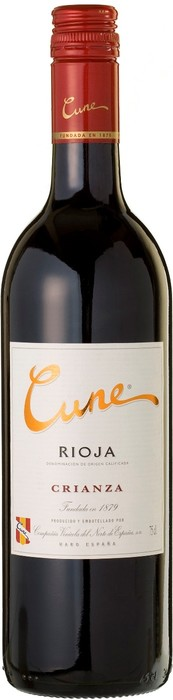

|  | |
| Год: | 2012 |
| Страна происхождения: | Испания, Риоха, Риоха Альта |
| Тип вина: | Красное сухое |
| Цена за бутылку: | 1264 рублей |
Красное вино "Cune" Crianza производится на основе винограда Темпранильо, выращенного на виноградниках региона
Риоха-Альта, с добавлением сортов Масуэла и Гарнача Тинта. Климат, находящийся под влиянием Атлантического океана, глинистые и
известняковые почвы, богатые железом и многими другими микроэлементами, создают особенно благоприятные условия для вызревания
винограда Темпранильо, который является визитной карточкой Испании. Собранный вручную урожай подвергается тщательному контролю и
сортировке. Затем ягоды отделяются от гребней. Кратковременная мацерация и последующая ферментация осуществляются в емкостях
из нержавеющей стали при контролируемой температуре 26-28°С. Для винификации используются бочки из американского дуба, в которых
вино выдерживается около 12 месяцев. После бутилирования "Кюне" Крианца еще не менее 6 месяцев проводит в бутылках. Это вино можно
пить как молодым, так и через несколько лет после изготовления.